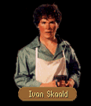

|
|
|  |
[CHAPTER 1]
[CHAPTER 2]
[CHAPTER 3]
[CHAPTER 6] |
|
|
| CHAPTER 1 - FIRST | CHAPTER 1 - SECOND |
|
Locklear motioned to the figure across the room. The man walked over to join them. He stood before them, eyebrows arched inquisitively. IVAN: Look here you ruffians... You're not students are you - of the Abbaye, I mean? I've had quite a lot of trouble from them. LOCKLEAR: No, no. Just travellers on the way through. IVAN: Mmhm. I've heard that line before, but you look honest enough. We gots a few rules here. Follow them and I'm sure we'll be fast friends. Break them and I'll have the three of you spitted and roasted. LOCKLEAR: We're listening... IVAN: Swords, daggers and other such stay in their sheathes. I don't tolerates no kind o' killing in my establishment unless its called for. Two, I don't allows no animals, especially if they be bandicoots, badgers or sal-e-manders. They gets in soups and they upsets me dogs and I won't have a baying jag in the middle of the dinner hour. And lastly, under no circumstances whatsoever are you ever, ever to use an en passah in this establishment. LOCKLEAR: A what? An en passah? IVAN: Now if you don't even know what one is then I don't have to worry about it, now do I? So, what can I do for you?
|
Locklear motioned to the figure across the room. The man walked over to join them. He stood before them, eyebrows arched inquisitively. IVAN: What's your pleasure gents? Anything I can do for you?
|
| FOOD |
LOCKLEAR: Any chance we can get something to eat around here?IVAN: Wouldn't be much of a pub if you couldn't. Is it to eat here or are you looking for something for the road?
LOCKLEAR: The road. If your cook can make up a batch of rations that would be fine.
IVAN: It's a done deal then if you'll put up the seven gold a pack. Still want them?
| YES (enough) | YES (not enough) | NO |
|
LOCKLEAR:
I don't see any reason I wouldn't. It's a reasonable price. IVAN: Good then. I'll set a blaze under Daphne. She'll have them for you in a few moments.
|
LOCKLEAR:
Wanting and having appear to be at separate crossroads at the moment. I've lost my money. IVAN: If this is some student prank, I'll not fall for it. You won't be getting your dinner for free... LOCKLEAR: Honest, it's no prank. We'll just have to come back for them some other time.
|
LOCKLEAR:
On second thought, maybe I should save up my money. I've got quite a few expenses to consider. IVAN: I certainly hope your gold is digestible then. It'll not keep you from starving on the road.
|
| ABBAYE ISHAP |
LOCKLEAR: The Abbaye is developing quite a reputation, isn't it? I've heard a number of stories.IVAN: I doubt you've heard the stories I've heard about the place. They produce a few fine minds there, aye, but they're also a refuse heap for nobles who wish to get their sons out from underfoot. The majority of them are runts...
LOCKLEAR: And the few that aren't?
IVAN: The special ones, they're fine men. Ishap willing, they'll grow into fine dukes and barons and such. The lot of them have become wonderful tacticians. That's what the Abbaye specializes in.
| STATUE (if Oracle) |
LOCKLEAR: We found the strangest thing earlier. It was this statue of a dragon out in the middle of nowhere. It was just standing in this little culvert with nothing around it.IVAN: Found old Malac's kill, did you? He wasn't always in the middle of nowhere. One time, he was just a hop, skip and a jump from the main row of Malac's Cross, but when the town moved, they left poor old Malac to fend for his own...
LOCKLEAR: Why did they leave him behind?
IVAN: The only man that ever thought Malac was a hero was Malac. Low born folk out and out hated him. Anyway, when the town began to fall under new raids by Keshian raiders come up from the Sea of Dreams, they decided to move the center of the town inside the see of the Abbaye Ishap. Raiders wouldn't touch the town after that, seeing as how the brothers of Ishap first came from Kesh. Later, after things had settled down a bit, they decided to leave the statue out there and let nature take it back. Strange thing about it, folks what have visited it recently have said a number of strange things about it...said it was talking to them.
| EN PASSAH |
LOCKLEAR: Sorry, but you've piqued my curiosity, what is an en passah? I've seen quite a few variations of chess but I don't think I've ever heard of that move.IVAN: It's Keshian. One night I was playing this fellow from Durbin. I had my game swinging on one particular pawn and the game was in my favor. So what does he do but move his pawn to the square directly behind mine, then claim to have captured my piece!
LOCKLEAR: That's an illegal move.
IVAN: So, I said. He goes on to tell me it's one of the most fundamental moves of the game. We argued about it for three hours until a student ran from the Queen's Row to the Abbaye to dig up an old book. And there it was. Back of the text, written in Keshian, the original rules to the game. En passah cost me two diamonds and very nearly the Queen's Row itself. Needless to say, I don't allow that rule to be played in here anymore. Last fellow that tried to use it on me was a fellow named Navon Du Sandau and I set him straight, though he showed me an incredible move he invented called Sandau's Retreat. Can't quite remember how it worked now, though.
| CHESS |
LOCKLEAR: Any chance I can interest you in a game of chess?IVAN: I don't play unless I'm making a wager. Makes playing interesting...
LOCKLEAR: What kind of stakes? Thirty, forty sovereigns?
IVAN: I don't play unless the stakes are quite high. Emeralds, nothing less. Do you think you're good enough for stakes like that?
| YES (Emerald) | YES (no Emerald) | NO |
|
LOSE: The game was short. Lifting a confident hand to move his priest, Ivan tipped over Locklear's black queen. "Checkmate. In five moves if I recall." Stroking his chin, he subdued an arrogant grin. "I warned you I was good. I believe you have an emerald of mine?"
WIN (Sandau's Retreat): On the chessboard, his well organized attack had decayed into a jumble of disorganized chaos while Locklear had somehow turned a tactical retreat into an outright offensive. Checkmate was inevitable. "Surrender?" Locklear asked, his hand poised on a hunter piece. "Or shall we continue?" Ivan shook his head. "No, no. I don't think it's necessary. The game is yours." "As is your emerald," Locklear replied. "Assuming you intend to honor the game."
|
LOCKLEAR:
Wait, I...I thought I had an emerald... IVAN: Right. And I thought I owned Kesh. But I'll let it slide since you don't seem to be the dishonest type.
|
LOCKLEAR:
Instinct tells me it would be a bad bet, especially since I don't know your game. No bet. IVAN: You'll come back and take your beating. Gut feeling tells me so.
|
| CHAPTER 1 - GOODBYE |
|
LOCKLEAR:
It's been nice chatting with you. I think we may hang about a bit and chat with some of the
students. IVAN: Whatever you like. Me, I've got dishes to tend to. LOCKLEAR: Thanks again. Perhaps we'll chat later.
|

| CHAPTER 2 - FIRST | CHAPTER 2 - SECOND |
|
James motioned to the figure across the room. The man walked over to join them. He stood before them, eyebrows arched inquisitively. IVAN: I hope you haven't come for the match. It's already over! JAMES: Match? What kind of match? IVAN: You're in the Queen's Row and you can ask that question? A chess match of course. It was wondrous. Jamie Tiller was defending his title against that snot nosed prat from the Abbaye, Kyle Fischer. Jamie opened, moved his queen's pawn to fourth rank. Fischer opened with Abbar's Gambit - arrogant cud - but Jamie actually maneuvered into it with his knight. I was thinking that he was going for the queen... JAMES: ...But he sacrificed his King's rook and took the priest... It's a brilliant move, but it left his own queen vulnerable didn't it? IVAN: You've got a good head for the game, Seigneur. JAMES: The Prince likes to play, but we don't always have a board handy. Once you learn to play in your head, a board almost becomes redundant. I have to admit it's tougher earlier into the game. More pieces to keep track of. IVAN: It's still fun to watch, though. That's why the Queen's Row is here. Perhaps I can relates the rest of the game over ale, assuming you gents are buying. What can I get you today?
|
James motioned to the figure across the room. The man walked over to join them. He stood before them, eyebrows arched inquisitively. IVAN: Jab me in the ribs when you wants to hear about the rest of the match. Invigorating sight that was. Now what is it I can gets for you?
|
| DOUBLE (if Petrumh) |
JAMES: Do I look familiar to you?IVAN: Can't say you do. Should I know you?
JAMES: Not me, my face. I want you to take a close look at me. Are you sure you don't know of anyone with a face like mine?
IVAN: Didn't say I've never seen anyone with a face like yours, I just said I've never seen you before... The man you're after is named Lysle Rigger. Is he related to you?
JAMES: Not sure. I don't know anything about my father and my mother died when I was young. It's possible either of them could have had another child. All I wish to do is talk to him, find out if we have any common history.
IVAN: Good enough... He's been running some sort of errand, though he hasn't told me what it was about or who hired him. He said if he should drop out of sight for any length of time, he would be hiding in Darkmoor, probably in the common storage bins there. If you get near there, call out that Ivan has sent you. He'll make an appearance. I'll warn you though, trouble of ten follows after him. I'd be prepared for a rumble.
JAMES: Sounds familiar. If he's no brother of mine, he's at least a close cousin.
| LOST & FOUND |
JAMES: Do you keep things that people have lost here?IVAN: Sometimes if it interests me, or if it seems like they would be coming back for it. Why have you lost something here before?
JAMES: No, I was just wondering if there was anything interesting you've found that you think it's unlikely the original owner is going to come back for. If so, I might be interested in taking them off your hands.
IVAN: Probably wouldn't do me any harm to clear out the area beneath the bar. I believe there are probably a few things. Tell you what, I'll sell you the lot of them sight unseen for...say...fifty sovereigns. Deal?
| YES (enough) | YES (not enough) | NO |
|
JAMES:
Sold, barkeep. I'll take it all. IVAN: I'll have to gather them up first. I'll give them to you before you leave and put the sale against your bill.
|
JAMES:
I don't suppose you'd happen to have a few spare golden sovereigns laying round
under that bar of yours as well? IVAN: Lost your money, have you? Well, I'm sure no one is going to come back and pick this stuff up by tomorrow. Try with me later.
|
JAMES:
Too much for me to spend on a gamble. No thanks. IVAN: Ah, the voice of reason. You'll never get to be a real chess player until you learn how to take a calculated loss.
|
| ADVICE |
JAMES: With all the trade moving back and forth through here, I imagine you talk to quite a few traders.IVAN: I talk to my share. Mostly the Queen's Row is a haven for the students from the Abbaye...
JAMES: Anything unusual going on that someone making a long trip should know? Bridge out somewhere? Bandits attacking?
IVAN: Only thing odd I've heard recent is that Lord Lyton's got a batch of tax collectors stopping folk what are trying to get in and out of Lyton. Some ridiculous high amount of gold. If folks don't have it, the collectors just direct them the other way or end up splitting their spleens for 'em. Course the merchants around here wouldn't make a pence if they stood for it. They've apparently found some way to sneak around the guards.
| ABBAR'S GAMBIT |
JAMES: Isn't there another move like Abbar's Gambit but a little different?IVAN: Aye, there's Abbar's Turn. That's a brave man's gambit. In the right place it's about the most powerful structure a man can put out, but in the wrong place it can cost you dearly...
JAMES: How does it work?
IVAN: I'll not be teaching you that play. If you knew truly how to use it, I'd have to give up playing chess against you. The very fact that you even know about that move tells me you know the game altogether too well.
| CHALLENGE |
JAMES: Any chance I can interest you in a game of chess?IVAN: I'm not so sure you would want to play against me. I just learned a few new moves from a book I borrowed from the Abbaye...
JAMES: Tell me the stakes, then I'll tell you whether I'm interested or not.
IVAN: Emeralds. Think you're up to it?
| YES (Emerald) | YES (no Emerald) | NO |
|
LOSE: Ivan played well. Drumming his fingers nervously on the bartop, James tried to find a way out of his current trap but his chances didn't look good. At best, the rest of his game would be defensive unless the barkeep made a critically bad move and that in no way seemed likely. "Black Queen takes White Hunter," Ivan said. "Checkmate in two moves." As if materializing by magic, James suddenly saw his opponent's goal and realized he could in no way stop him from forcing him into checkmate. "The emerald is yours, James said, tipping over his king. "You win."
WIN (Abbar's Turn): While pounding James's leftward defensive positions, Ivan hadn't noticed the seigneur's subtle adjustments to his rightward formation of a pawn, a priest and his queen. Ivan grinned as he tossed a pawn from the board. "Seems I'm inside your line. Ready to surrender yet?" "Not exactly," James replied, sliding his hunter piece to the opposite side of the board. "Have you ever heard of Abbar's Turn?" Abruptly the barkeep's face went pale as he studied the pieces. "You couldn't. You did." For the next three moves he made feeble attempts to regain the strength of his position but at last gave it up as vain hope. "I surrender."
|
JAMES:
Forgive me, but I don't seem to have an emerald... I felt sure I had one with me... IVAN: Likely, I'm always making that mistake myself... I'll let you off the hook this time. Least you didn't pull this stunt after we'd played, or I would have suspected you weren't a man of honor.
|
JAMES:
Instinct tells me it would be a bad bet, especially since I don't know your game. No bet. IVAN: You'll come back and take your beating. Gut feeling tells me so.
|
| CHAPTER 2 - GOODBYE |
|
JAMES:
It's been nice chatting with you. I think we may hang about a bit and chat with some of the
students. IVAN: Whatever you like. Me, I've got dishes to tend to. JAMES: Thanks again. Perhaps we'll chat later.
|

| CHAPTER 3 - FIRST | CHAPTER 3 - SECOND |
|
James motioned to the figure across the room. The man walked over to join them. He stood before them, eyebrows arched inquisitively. IVAN: Tell me something. What is it that Malac's Cross has done to deserve the Abbaye Ishap? Have we done some grievous deed to the King that he should ditch a wagon load of disrespectful, annoying, self-centered little dung haulers into our midst? What is it now? JAMES: I take it the students from the Abbaye Ishap are causing you grief. IVAN: No. The neighbor's dog digging up your begonias and piddling on your front step, that is grief. No, what the Abbaye and her blessed students have given me is a twinging ulcer and a head full of grey hair! JAMES: That's strange. I would think that students would be excellent customers. IVAN: Oh well now, customers, yes. I can't stock ale fast enough to keep their eyeballs floating, but as someone that has to babysit their noble asses...that is another matter. I say lock the sorry prats in the basement until they'ze twenty or thereabouts. JAMES: Are you sure that you haven't been speaking to the Prince? Sounds like something that he would say about his twins. Borric and Erland may be princes of the blood royal, but in Arutha's eyes they are nothing but a royal pain in the behind. IVAN: Kids are all the same, whether their blood's blue or not. What can I get for you today?
|
James motioned to the figure across the room. The man walked over to join them. He stood before them, eyebrows arched inquisitively. IVAN: I need to clean up some pots in the back, but I might have a minute or two to chat. What can I do for you?
|
| CHAPTER 3 - GOODBYE |
|
JAMES:
It's been nice chatting with you. I think we may hang about a bit and chat with some of the
students. IVAN: Whatever you like. Me, I've got dishes to tend to. JAMES: Thanks again. Perhaps we'll chat later.
|

| CHAPTER 6 - FIRST | CHAPTER 6 - SECOND |
|
Owyn motioned to the figure across the room. The man walked over to join them. He stood before them, eyebrows arched inquisitively. IVAN: Brave customers tonight! And I thought I was going to tend the hearth with these puny lads. OWYN: How have we merited bravery, barkeep? IVAN: Haven't you heard the stories? Why there's snake people about, roaming the streets stealing babes from their mother's arms and giving sheep the blue heaves. Stole the gambols right off old nursemaid Finch's house and plugged up the gutters at the Abbaye Ishap. OWYN: You don't seem to have had any difficulties. IVAN: Ah, no. I wouldn't! I lives here and don't have to tread the roads. Can't just close up shop when some pratting student elects to rumble the locals. OWYN: So you think this is all part of a prank? IVAN: Come off it, lad! Snakes that looks like people and runnin about stealing chickens? If it's not a joke then I'm a gwali's uncle! Course it's a prank! What 'ja take me for, an old buggering gaffer? Now, what can I do for you two?
|
Owyn motioned to the figure across the room. The man walked over to join them. He stood before them, eyebrows arched inquisitively. IVAN: Killed any snake people on the way in? If so, pile up the bodies by the door and I'll skin 'em for a pair of new boots! What can I get for you?
|
| PETRUMH |
OWYN: Do you know an old woman who goes by the name Petrumh?IVAN: She comes in and drinks on occasion. You looking for her?
OWYN: Actually, no. We ran into her and she said she left something behind the last time she was in here. She asked us to pick it up for her.
IVAN: I'll say she left something behind. Keg of Keshian Ale. Good thing I didn't drain it myself. I'll get it for you before you leave.
| CHAPTER 6 - GOODBYE |
|
OWYN:
It's been nice chatting with you. I think we may hang about a bit and chat with some of the
students. IVAN: Whatever you like. Me, I've got dishes to tend to. OWYN: Thanks again. Perhaps we'll chat later.
|